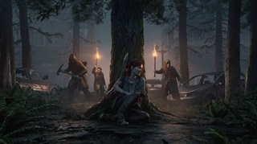
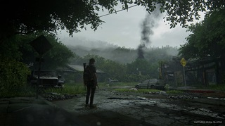

The Last of Us Parte 2 é um jogo aclamado pela crítica que oferece uma experiência de jogo profunda, emocionante e desafiadora. É um jogo obrigatório para qualquer fã do gênero de ação e aventura, mas esteja preparado para sua violência gráfica, temas pesados e a complexidade de sua narrativa.
História
Cinco anos após os eventos do primeiro jogo, Ellie, agora uma jovem adulta endurecida pela vida no apocalipse, busca vingança contra Abby por ter matado seu pai adotivo, Joel.
A jornada leva Ellie por um caminho brutal e sangrento pelos Estados Unidos pós-apocalípticos, confrontando-a com diversos grupos hostis e com as consequências de suas próprias ações.
O jogo explora temas complexos como vingança, perda, amor, redenção, trauma, ciclo de violência e a busca por significado em um mundo devastado.
Jogabilidade
Combate intenso e estratégico: Combine furtividade, tiroteios e combate corpo a corpo para sobreviver aos perigos do mundo. Utilize o ambiente a seu favor e improvise com recursos limitados.
Sistema de crafting: Crie armas, munição, itens de cura e melhorias para seus equipamentos. Gerencie seus recursos com cuidado para garantir sua sobrevivência.
Exploração: Explore um mundo vasto e detalhado, cheio de segredos, colecionáveis e pistas que aprofundam a história e o universo do jogo.
Níveis desafiadores: Supere desafios variados, desde puzzles e armadilhas até hordas de inimigos e confrontos com chefes implacáveis.
Personagens:
Ellie: Protagonista principal, agora uma jovem adulta marcada pela perda e pelo trauma, buscando vingança e redenção.
Abby: A mulher que matou Joel e o alvo da vingança de Ellie. Uma personagem complexa com seus próprios traumas e motivações.
Dina: Amiga de Ellie e interesse amoroso. Uma voz de esperança e compaixão em meio à brutalidade do mundo.
Jesse: Amigo de Dina e companheiro de viagem de Ellie. Um personagem leal e otimista que enfrenta a dura realidade do apocalipse.
Personagens:
Tommy: Irmão de Joel e mentor de Ellie. Um homem endurecido pela perda, buscando proteger os que lhe restam.
Lev e Yara: Irmãos que cruzam o caminho de Ellie e Abby. Personagens que representam a esperança de um futuro diferente.
Mel e Owen: Casal que oferece abrigo a Ellie e Abby. Personagens que demonstram a complexidade das relações humanas em um mundo em colapso.
Whitney: Líder dos Seraphites, um grupo religioso fanático que representa uma ameaça significativa.
Controvérsia
Violência gráfica e brutal: O jogo apresenta cenas de violência extrema que podem ser perturbadoras para alguns jogadores.
Representação da brutalidade: A forma como a violência é retratada no jogo gerou debates sobre seus impactos na sociedade e na saúde mental dos jogadores.
Temas pesados: O jogo explora temas como vingança, perda, trauma e ciclo de violência, que podem ser difíceis de lidar para alguns jogadores.
The Last of us parte 2


Wikigames
Com Amor Equipe Wikigamers!